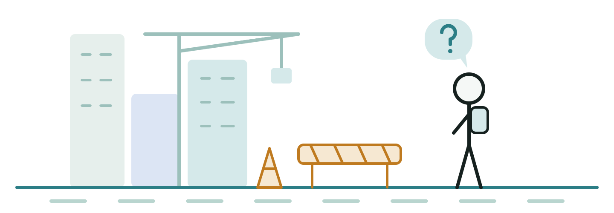

מצגת צרכים
הבית הזה, השטח העירוני
קבוצה 2 · miLAB AI Co-Creation
אלדר ביכלר, נועה כץ, יהלי חן, גאיה שי, גבריאל גפן
הדומיין: תהליכים עירוניים
איך תושבים מוצאים, או לא מוצאים, מידע עירוני שמשפיע על היום-יום שלהם
עבודות וחסימות בכבישים
תמ״א 38 ובנייה
רכבת קלה ותשתיות
תל אביב
סטודנטית לתקשורת
עצמאית, אסטרטגיה ומיתוג
מעצבת פנים
עובדת בתעשייה
סטודנטית לפסיכולוגיה
מומחית: מנהלת פרויקטים בעירייה
רמת גן
מומחית: סגנית מנהלת אגף ההנדסה
ירושלים
סטודנט לביולוגיה
משרת בצבא קבע

גיא, 28, תושב גוש דן
מתנייד כל יום בעיר שמשתנה סביבו
מה קורה סביבובנייה, תמ״א, רכבת קלה וחסימות
מה הוא חווהמגלה רק כשזה כבר קורה, ואין לו למי לפנות
מה הוא מרגישחוסר ודאות, ותחושה שהוא שקוף בעיני העירייה
מה מאפיין את גיא
מעניין אותו רק מה שקרוב אליו
סומך על וואטסאפ ושמועות, לא על ערוצים רשמיים
רוצה שיראו אותו, לא רק לקבל עוד מידע
תובנות מהמומחים
Expert insights + quotes
בתוך העירייה, התהליכים לא מתואמים
ארבע בעיות שעלו בראיונות עם אנשי עירייה
ביזור סמכויות
כל יחידה עובדת בשיטות שלה, ולא ברור מי מוסמך להחליט
פניות ממוקדים שונים
אותה פנייה מגיעה מכמה ערוצים, ולא ברור מי כבר ענה
חוסר תיאום
יחידות לא יודעות זו על זו, ולפעמים יוזמות פרויקטים דומים
לא ברור למי לפנות
לא שקוף מי בעל התפקיד, ומי אחראי ליידע את הציבור
במילים שלהן
״בין יד ימין לרגל שמאל״
כך תיארה את הקשר בין היחידות בעירייה: כל יחידה עובדת בשיטות שלה, והדרישות נופלות בדרך
מנהלת פרויקטים, עיריית תל אביב
״ה-SOS של האגף״
כך הגדירה את עצמה: פניות שלא קיבלו מענה מגיעות אליה, והתיאום נשען עליה ולא על כלי מסודר
סגנית מנהלת אגף ההנדסה, רמת גן
צרכי המשתמש
User needs + quotes
8 מתוך 10
תושבים מגלים על עבודות וחסימות רק כשהם כבר נתקעים בהן
״לרוב אני מגלה את המפגע רק שאני מגיעה למקום.״
סטודנטית, תל אביב
ודאות
לדעת מה קורה ומה מתוכנן באזור שלו, ועד מתי
״אין לי עדכון מראש... אין לי מושג, אין לי מושג.״
תושבת תל אביב, 35 שנה בעיר
“I have no idea when things are happening, and I wouldn’t even know where that exists.”
תושבת תל אביב, דוברת אנגלית
להרגיש שרואים אותו
שיש מי שמקשיב לו, ושהקול שלו לא נעלם בדרך
״שיש מישהו שרואה אותי, שהעירייה רואה אותי... שיש איזשהו הקשבה כזה.״
סטודנטית, תל אביב
״תמיד יש איזו דרך שבה המסר או הרצון של אותו תושב לא עובר, או נעלם בדרך.״
תושב גבעתיים
מידע ממוקד ופרסונלי
רק מה שנוגע לכתובת ולמסלול שלו, בלי הצפה
״ברגע שיש משהו שיכול להיות רלוונטי לגבי המיקום שלי... הייתי שמחה אם הייתי מקבלת על זה איזושהי הודעה.״
סטודנטית, תל אביב
“I don’t care about the cause. I just care about getting from point A to point B.”
תושבת תל אביב, דוברת אנגלית
סיפור המשתמש
״כתושב גוש דן שמתנייד כל יום בעיר שמשתנה סביבו, אני רוצה לדעת מראש מה משתנה במסלול ובאזור שלי, כדי שאוכל לתכנן את היום ולהרגיש שהעירייה רואה אותי.״
How might we help Gush Dan residents feel seen and certain while their city is changing around them?
איך נוכל לעזור לתושבי גוש דן להרגיש שרואים אותם ושיש להם ודאות, בזמן שהעיר משתנה סביבם?
פתרונות קיימים: טכנולוגיים
Waze
יתרון: מתריע על חסימות בדרך
חיסרון: רק בזמן אמת, ולא תמיד
אתר העירייה ומפת GIS
יתרון: כל העבודות על מפה אחת
חיסרון: צריך לדעת שהיא קיימת ולחפש
מוקד 106
יתרון: כתובת לדיווח
חיסרון: כיוון אחד, אף אחד לא חוזר
קבוצות וואטסאפ ופייסבוק
יתרון: מהירות וקרובות לשטח
חיסרון: לא מעודכנות, רק האזור הקרוב
פתרונות לא טכנולוגיים
מה הם עושים
יוצאים מוקדם ״ליתר ביטחון״עוקפים אזורי בנייהשואלים שכנים, אמא או שותףמדווחים ל-106 בעצמם
מה הם מקבלים כנורמלי
לגלות על חסימה רק בשטחלסמוך על וואטסאפ ושמועותלא לקבל תשובה מהעירייה
תודה רבה :)